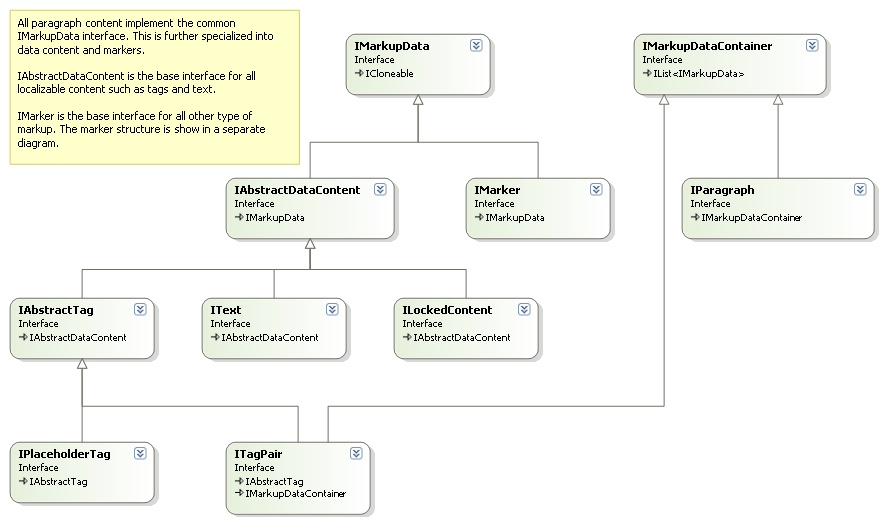
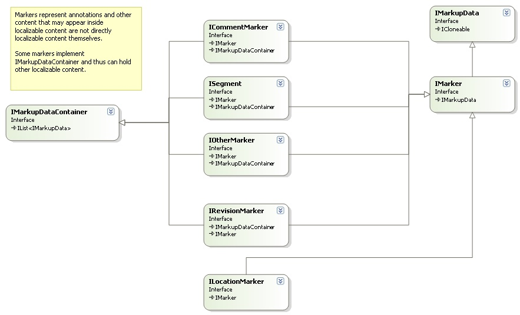
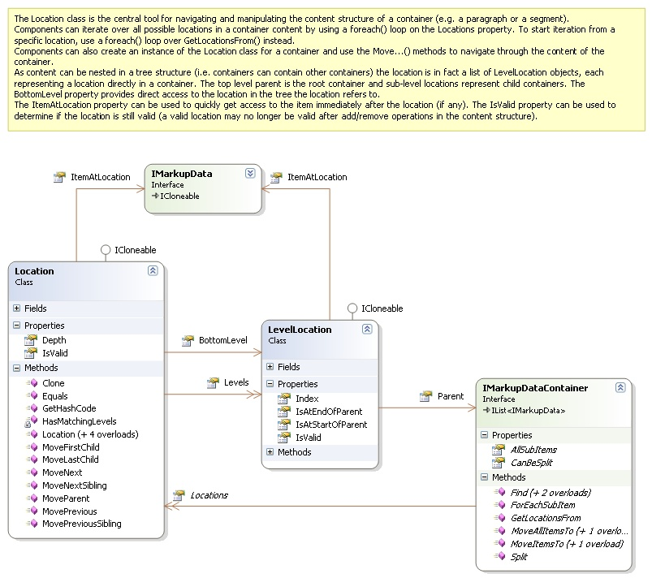

Bilingual API Overview
This section provides a quick overview of the Bilingual API. For detailed documentation on interfaces, properties, and methods, see the reference documentation.
Bilingual processor components implement the IBilingualContentProcessor interface. The framework calls this interface to process content in a bilingual object model, one paragraph unit at a time.

The content flows to components through ProcessParagraphUnit calls. The framework invokes Initialize before processing any content to communicate document properties common to all files. For each native file, the framework calls SetFileProperties before processing file content. When file processing completes, the framework calls FileComplete, and after all files finish processing, it calls Complete.
The file properties from the SetFileProperties call provide access to persistent file conversion settings where components can store and retrieve settings related to the processed data.

The EventFiringBilingualProcessor implements IBilingualContentProcessor and provides a convenient way to process only specific calls. This implementation fires events for each call, and you can subscribe to the events you need. This approach works especially well for unit tests.

Paragraph units
Paragraph units fall into two categories: structure paragraph units and localizable paragraph units. Structure paragraph units contain only structural data (structure tags) with no directly localizable content. Localizable paragraph units contain text and tags modified during translation. Your implementation processes both types in ProcessParagraphUnit by checking the IsStructure property to distinguish between them.

A localizable paragraph unit has the following main properties:

Paragraph content
Paragraph source and target language content consists of objects that implement IMarkupDataVisitor derived interfaces:

Markup
Inline tags provide additional details:

Tags and text within a paragraph can carry different types of markup, represented by IAbstractMarker as the base interface:

Segments
Segments are the most important markup type. Each segment has a unique ID within its paragraph unit. In a localized paragraph unit, every segment has a source/target language counterpart. Both source and target segments reference the same ISegmentPair object, so they always share the same segment ID. Retrieve the corresponding source or target segment using GetSourceSegment or GetTargetSegment with the segment ID as a parameter.
Navigation and iteration
Navigate and iterate through bilingual content in multiple ways. The most intuitive approach uses the Parent, IndexInParent, and Items properties to directly access related nodes. Alternatively, iterate over all items in an IAbstractMarkupDataContainer directly, through the AllSubItems property, or by calling ForEachSubItem with an action object.
The Location class provides another flexible option for iterating through and working with localizable content in a paragraph:

Visitor pattern
Process localizable content through a visitor pattern, which works especially well for collections of objects (for example, markup data containers). This approach avoids writing complex and hard-to-maintain switch/if statements for different object types. Call AcceptVisitor on the object, and it calls back to the corresponding method on your visitor. For more information on the Visitor pattern, see Design Patterns: Elements of Reusable Object-Oriented Software by Erich Gamma, Richard Helm, Ralph Johnson, and John Vlissides.